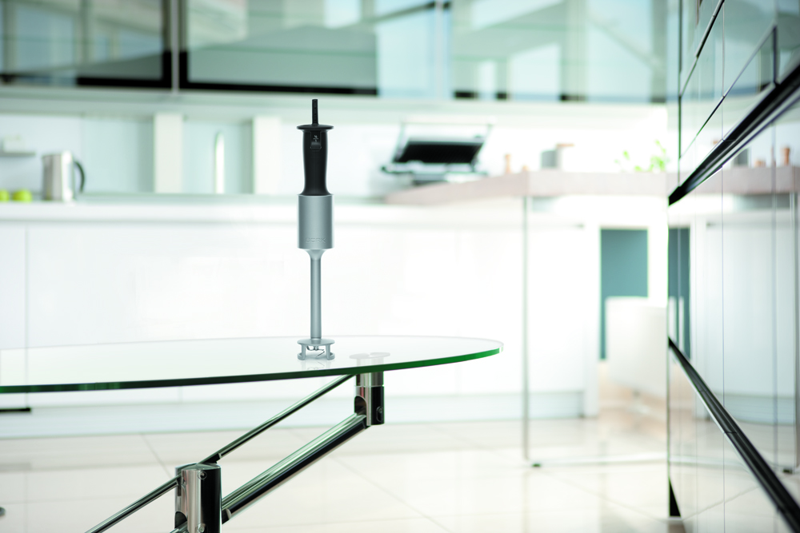
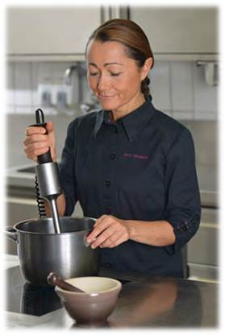
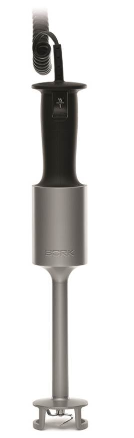
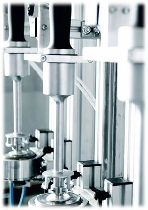
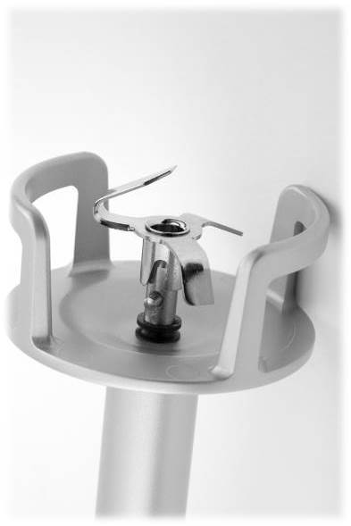
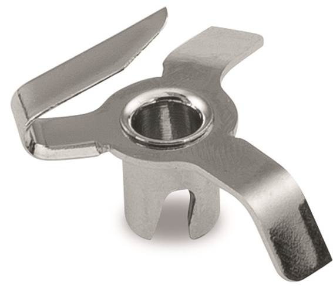
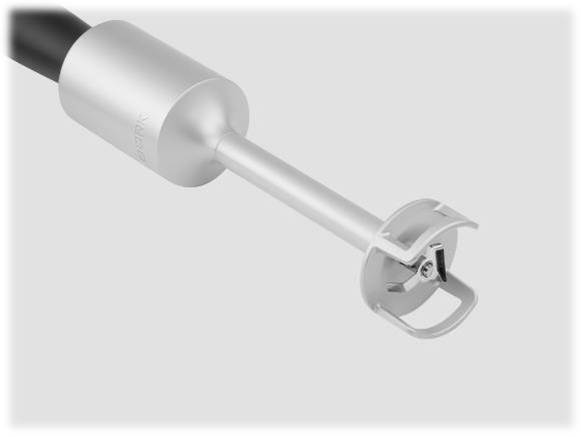
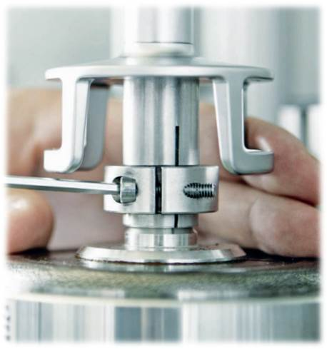

Блендер погружной BORK B781
Погружной блендер BORK – необходимый инструмент на каждой кухне, верный помощник любого повара. Эксклюзивные разработки BORK – мощный, но при этом очень тихо работающий двигатель, рабочая насадка полуоткрытой формы и изогнутые лезвия. Уникальность конструкции блендера позволяет использовать его в посуде разной формы и объема, не разбрызгивая ингредиенты и всегда получая идеальный результат.
Мощный функционал
Ключевые особенности

Ручка эргономичной формы
Низкий уровень шума и отсутствие вибрации
Рабочая насадка уникальной формы
Быстрое и эффективное смешивание в любой посуде
Блок 3D-лезвий
Диск битер для взбивания
Простая чистка
Ручка эргономической формы

Универсальная форма ручки с прорезиненным покрытием на массивном металлическом корпусе обеспечивает работу блендером как левой так и правой рукой
Уникальная форма кнопки позволит комфортно пользоваться блендером не опасаясь испортить маникюр
Витой шнур обеспечит свободу перемещения с блендером по кухне на расстояние до 2-х метров от розетки.
Низкий уровень шума и отсутствие вибрации
Комфортное использование погружного блендера BORK обеспечивается очень тихой работой
Высокоэффективный DC-двигатель 300 Вт с высочайшим КПД – последняя разработка швейцарских инженеров
Отсутствие вибрации достигается благодаря плавающей подвеске двигателя
Безупречный результат смешивания ингредиентов -результат оптимально сбалансированной скорости вращения и крутящего момента.
Рабочая насадка уникальной формы
Уникальная полуоткрытая форма рабочей насадки, а также блок 3D-лезвий гарантируют высокую эффективность смешивания продуктов в посуде любого объема и формы
Небольшой купол внутри насадки блендера минимизирует разбрызгивание
Вы можете только держать блендер в емкости, нет необходимости постоянно его перемещать вверх и вниз. При этом блендер не присасывается к дну
Исключительная глубина погружения до 25 см благодаря конструкции. Корпуса.
Блок 3d-лезвий и диск для взбивания
Вращение наклонных лезвий в тройном радиусе позволяет этому универсальному прибору решать самые разные кулинарные задачи: рубить, измельчать и смешивать ингредиенты, готовить пюре.
Диск битер – идеальное приспособление для приготовления разнообразных соусов, муссов, кремов, а также взбивания яиц и сливок.
Простая чистка
Благодаря компактной и простой конструкции блендер легко очищается от остатков продуктов
Если использовались продукты, не содержащие жир, погружную часть блендера можно легко очистить, погрузив ее в теплую воду и включив прибор примерно на 10 секунд
Всасывающая система насадки блендера, которая обеспечивает наилучшую циркуляцию ингредиентов, доставая их со дна посуды, при этом не присасываясь ко дну.
Технические характеристики
Мощность 300 Вт
Количество оборотов 20 000 об/мин
Габариты (Д х В): 60 х 370 мм
Вес: 0,94 кг
Сделано в Швейцарии